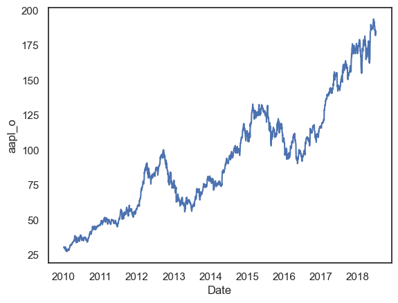
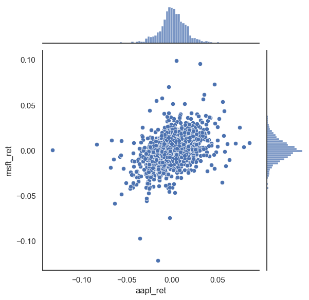
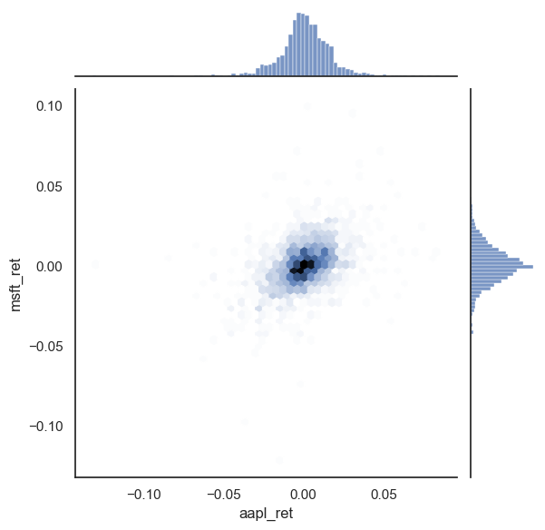
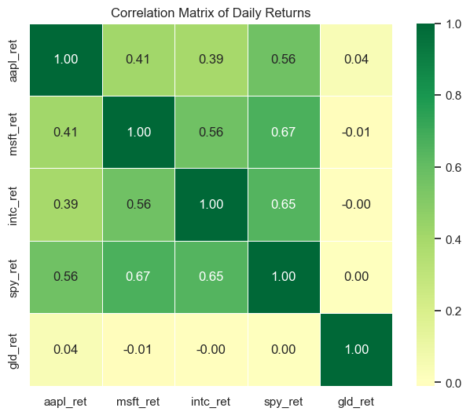
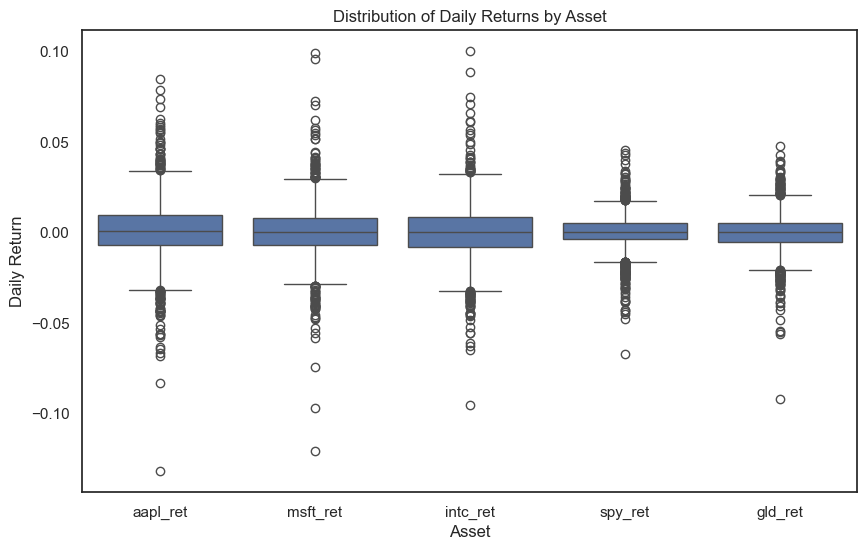
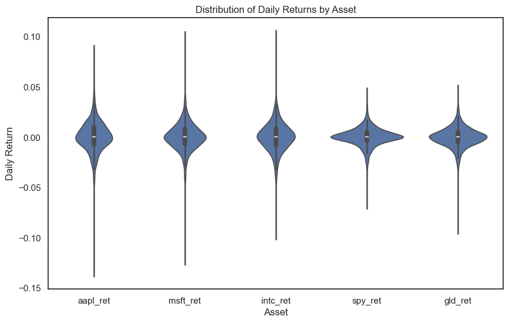
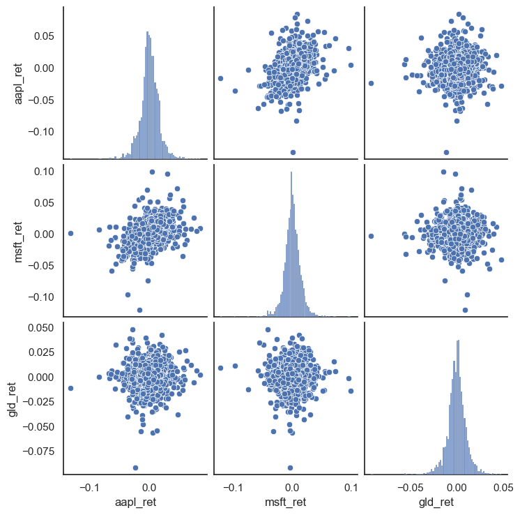

seaborn#
We will start our very broad discussion of data visualization with seaborn. seaborn is based on matplotlib, but is “higher-level” (i.e. easier to use) and makes what many consider nicer looking graphs (i.e. many = me).
So, why do we still look at matplotlib? I think it is good to see matplotlib, since it is the most popular way to create figures in Python. But, you should take a look at seaborn as well.
Some people, especially those coming to Python from other languages, are suggesting that you just start with seaborn instead.
seaborn comes with Anaconda and Github Codespaces, so there’s nothing to install. Just add import seaborn as sns to your set-up and you’re ready to go. In my set-up, I’ll set a theme, so that the same theme is used across all of my graphs. I’ll create my returns directly in the stocks DataFrame.
DataCamp has a seaborn tutorial as well.
There’s an example gallery as well.
You can find other examples here.
Finally, I’m going to use the df.var_name convention for pulling out variables from a DataFrame. I find it easier than df['var_name']. I’ll go back and forth in the notes, to get you use to the different styles.
# Set-up
import numpy as np
import pandas as pd
import seaborn as sns
import matplotlib.pyplot as plt
sns.set_theme(style="white")
# Include this to have plots show up in your Jupyter notebook.
%matplotlib inline
# Read in some eod prices
stocks = pd.read_csv('https://raw.githubusercontent.com/aaiken1/fin-data-analysis-python/main/data/tr_eikon_eod_data.csv',
index_col=0, parse_dates=True)
stocks.dropna(inplace=True)
from janitor import clean_names
stocks = clean_names(stocks)
stocks['aapl_ret'] = np.log(stocks.aapl_o / stocks.aapl_o.shift(1))
stocks['msft_ret'] = np.log(stocks.msft_o / stocks.msft_o.shift(1))
stocks.info()
<class 'pandas.DataFrame'>
DatetimeIndex: 2138 entries, 2010-01-04 to 2018-06-29
Data columns (total 14 columns):
# Column Non-Null Count Dtype
--- ------ -------------- -----
0 aapl_o 2138 non-null float64
1 msft_o 2138 non-null float64
2 intc_o 2138 non-null float64
3 amzn_o 2138 non-null float64
4 gs_n 2138 non-null float64
5 spy 2138 non-null float64
6 _spx 2138 non-null float64
7 _vix 2138 non-null float64
8 eur= 2138 non-null float64
9 xau= 2138 non-null float64
10 gdx 2138 non-null float64
11 gld 2138 non-null float64
12 aapl_ret 2137 non-null float64
13 msft_ret 2137 non-null float64
dtypes: float64(14)
memory usage: 250.5 KB
If you don’t have janitor installed, you’ll need to run in a code cell above your set-up code. You should only have to install a package once per code space.
pip install pyjanitor
You can read more about janitor here.
Let’s start with a line plot. We’ll plot just AAPL to start.
sns.lineplot(x=stocks.index, y=stocks.aapl_o)
plt.show();

We can also make a distribution, or histogram, as well. I’ll add what’s called the kernel density estimate (kde), which gives the distribution. We’ll do more data work like this when thinking about risk.
sns.displot(stocks.aapl_ret, kde=True, bins=50)
plt.show();
sns.jointplot(x=stocks.aapl_ret, y=stocks.msft_ret)
plt.show();

sns.jointplot(x=stocks.aapl_ret, y=stocks.msft_ret, kind='hex')
plt.show();

Correlation heatmaps#
One of the most important visualizations in finance is the correlation heatmap. When building a portfolio, you want to know which assets move together and which provide diversification. A heatmap shows all pairwise correlations at once.
Let’s create returns for several assets and visualize their correlations.
# Create returns for multiple assets
stocks['spy_ret'] = np.log(stocks.spy / stocks.spy.shift(1))
stocks['gld_ret'] = np.log(stocks.gld / stocks.gld.shift(1))
stocks['intc_ret'] = np.log(stocks.intc_o / stocks.intc_o.shift(1))
# Select just the return columns
returns = stocks[['aapl_ret', 'msft_ret', 'intc_ret', 'spy_ret', 'gld_ret']].dropna()
# Calculate the correlation matrix
corr_matrix = returns.corr()
# Create the heatmap
plt.figure(figsize=(8, 6))
sns.heatmap(corr_matrix, annot=True, cmap='RdYlGn', center=0, fmt='.2f',
square=True, linewidths=0.5)
plt.title('Correlation Matrix of Daily Returns')
plt.show();

Notice a few things:
Green = positive correlation: Assets that move together (tech stocks like AAPL, MSFT, and INTC)
Red = negative correlation: Assets that move in opposite directions (good for diversification)
The diagonal is always 1.0: Every asset is perfectly correlated with itself
Gold (GLD) has low correlation with stocks: This is why gold is often used as a portfolio diversifier
The annot=True argument adds the numbers to each cell. The cmap='RdYlGn' sets the color scheme (Red-Yellow-Green), and center=0 makes sure that zero correlation appears as yellow.
Box plots#
Box plots (also called box-and-whisker plots) are excellent for comparing distributions across categories. They show the median, quartiles, and outliers in a compact format. In finance, we often use them to compare return distributions across different assets, sectors, or time periods.
# Reshape data from wide to long format for boxplot
# We need one column for the asset name and one for the return value
returns_long = returns.melt(var_name='Asset', value_name='Return')
returns_long.head()
| Asset | Return | |
|---|---|---|
| 0 | aapl_ret | 0.001727 |
| 1 | aapl_ret | -0.016034 |
| 2 | aapl_ret | -0.001850 |
| 3 | aapl_ret | 0.006626 |
| 4 | aapl_ret | -0.008861 |
# Create the box plot
plt.figure(figsize=(10, 6))
sns.boxplot(x='Asset', y='Return', data=returns_long)
plt.title('Distribution of Daily Returns by Asset')
plt.ylabel('Daily Return')
plt.show();

How to read a box plot:
The box spans from the 25th percentile (Q1) to the 75th percentile (Q3)
The line inside the box is the median (50th percentile)
The whiskers extend to 1.5 times the interquartile range (IQR)
The dots are outliers — extreme values beyond the whiskers
Notice how AAPL has more outliers (extreme return days) than SPY. This makes sense — individual stocks are more volatile than diversified index funds.
Violin plots#
A violin plot is like a box plot, but it also shows the full shape of the distribution. The width of the “violin” at each point represents how many observations have that value. This gives you more information than a box plot, but can be harder to read at first.
# Create the violin plot
plt.figure(figsize=(10, 6))
sns.violinplot(x='Asset', y='Return', data=returns_long)
plt.title('Distribution of Daily Returns by Asset')
plt.ylabel('Daily Return')
plt.show();

The violin shapes show that all these return distributions are roughly symmetric around zero — which is what we’d expect for daily returns. The width in the middle shows that most returns are small (close to zero), with the tails showing less frequent large moves.
Pair plots#
When you want to see the relationships between all pairs of variables at once, use a pair plot. This creates a grid where:
The diagonal shows each variable’s distribution
The off-diagonal cells show scatter plots of each pair
This is a quick way to explore relationships in your data.
# Pair plot - note this can take a moment with many variables
# We'll use just three assets to keep it readable
returns_subset = returns[['aapl_ret', 'msft_ret', 'gld_ret']].dropna()
sns.pairplot(returns_subset)
plt.show();

Look at the scatter plots: AAPL and MSFT show a clear positive relationship (the cloud tilts upward), while GLD has a much weaker relationship with both stocks. This confirms what we saw in the correlation heatmap — gold provides diversification.
Tip
Pair plots get unwieldy with more than 5-6 variables. For larger sets, stick with correlation heatmaps or focus on specific pairs of interest.